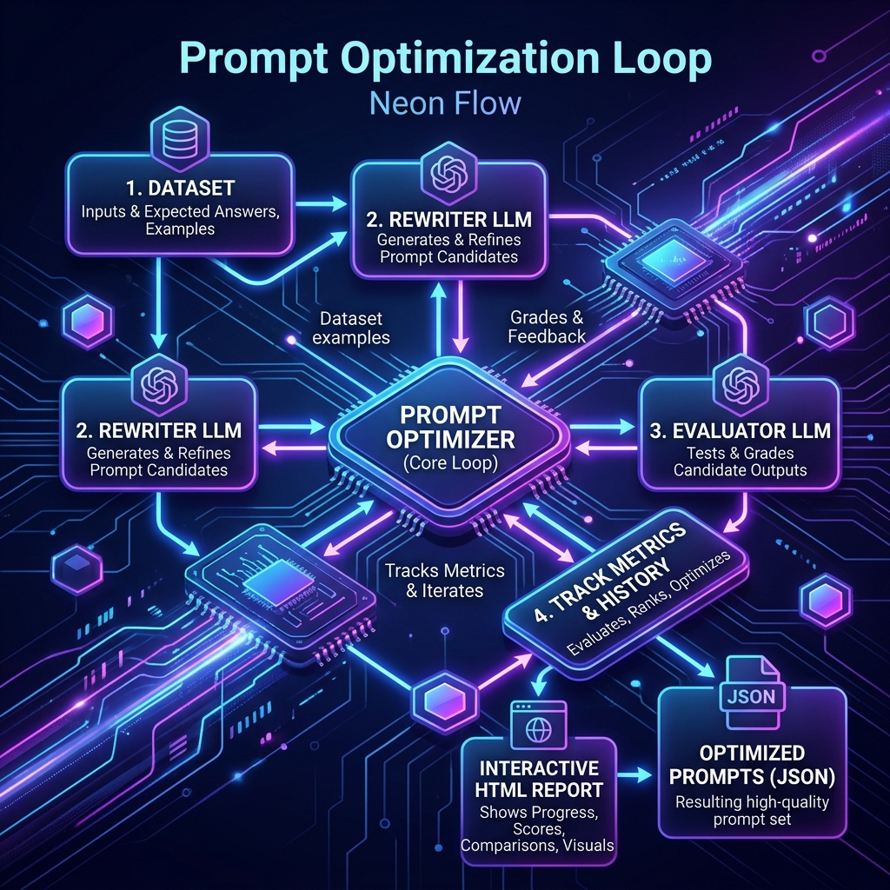

Prompt Optimization¶
Prompt engineering is often a manual, fragile trial-and-error process. Agentomatic solves this by providing a built-in Prompt Optimization Engine that acts like model.fit() but for your agent prompts.
Inspired by Stanford's DSPy, the framework allows you to evaluate agent performance over a dataset, automatically generate prompt candidates using a powerful rewriter model, score them using evaluation metrics, and export the best-performing prompt version back into your prompts.json file.
🏗️ The Optimization Flow¶
The optimization loop coordinates datasets, rewriter LLMs, evaluator LLMs, and scoring metrics to iteratively improve prompt versions:

⚡ Quick Start¶
You can run prompt optimization programmatically in Python or with a single CLI command.
1. Programmatic Optimization (Python)¶
from agentomatic.optimize import PromptOptimizer, Dataset
# 1. Initialize the optimizer
optimizer = PromptOptimizer(
agent="my_agent",
metrics=["exact_match", "contains"],
strategy="iterative_rewrite",
)
# 2. Load the evaluation dataset
dataset = Dataset.from_jsonl("eval.jsonl")
# 3. Run the optimization loop
result = await optimizer.optimize(
dataset=dataset,
max_iterations=10,
target_score=0.9,
)
# 4. Print results & apply
print(result.report()) # Terminal report summary
result.apply() # Saves the optimized prompt as a new version in prompts.json
2. CLI Command¶
agentomatic optimize my_agent \
--dataset eval.jsonl \
--metrics exact_match,contains \
--strategy iterative_rewrite \
--max-iterations 10 \
--apply
🧠 Optimization Strategies¶
Agentomatic supports 6 optimization strategies suited for different task formats and complexities:
| Strategy Name | CLI / String ID | How It Works | Best Used For |
|---|---|---|---|
| Iterative Rewrite | iterative_rewrite |
Evaluates prompts, feeds errors/scores to a powerful rewriter LLM, and refines instructions iteratively. | General instruction-following and system prompt refinement. |
| Few-Shot Bootstrap | few_shot_bootstrap |
Runs the agent over the dataset, collects high-scoring successful traces, and bootstraps them into the prompt as examples. | Complex logic requiring demonstration of correct formatting/reasoning. |
| Chain of Thought | chain_of_thought |
Rewrites the prompt to enforce step-by-step reasoning instructions and generates visual scratchpad examples. | Multi-step reasoning and mathematical/logical problems. |
| MIPRO | mipro |
Bayesian-based prompt optimizer. Jointly optimizes both the instruction strings and few-shot examples using search space trials. | High-complexity pipelines where both instructions and examples matter. |
| Bootstrap Random Search | bootstrap_randomsearch |
Bootstraps multiple few-shot example sets and runs a random search to find the optimal examples for the prompt. | Large datasets where handpicking examples is impossible. |
| Ensemble | ensemble |
Evaluates and compiles multiple high-performing prompt variants into a weighted ensemble prompt. | Robust prompt engineering requiring high generalization. |
📊 Evaluation Metrics¶
Agentomatic supports standard matches, LLM judges, and full DeepEval validation suites.
1. Text Matching Metrics¶
- Exact Match (
exact_match): Verifies if the agent response matches the expected answer exactly. - Contains (
contains): Verifies if the agent response contains a set of defined target keywords.
2. LLM-as-a-Judge Metrics¶
- LLM Judge (
llm_judge): Asks an evaluator LLM to grade the response on a scale of 0 to 1 based on custom criteria instructions. - G-Eval (
g_eval): Uses the G-Eval framework protocol to evaluate complex criteria (e.g. coherence, readability) with detailed scoring rubrics.
3. DeepEval Metrics (deepeval)¶
Requires pip install agentomatic[optimize]. Integrates directly with the Confident AI DeepEval framework:
- Answer Relevancy (answer_relevancy): Measures how relevant the agent response is to the user query.
- Faithfulness (faithfulness): Evaluates Hallucination by comparing the agent response to retrieved context.
- Context Recall (context_recall): Measures whether the RAG retriever fetched all the required context.
4. Custom Metrics (Python)¶
You can define any custom Python function returning a score between 0.0 (worst) and 1.0 (best):
from agentomatic.optimize import CustomMetric
def check_word_count(response: str, expected: str, **kwargs) -> float:
# Reward responses under 100 words
words = len(response.split())
return 1.0 if words < 100 else 0.0
metric = CustomMetric(name="short_answers", scorer=check_word_count)
optimizer = PromptOptimizer(
agent="my_agent",
metrics=[metric],
strategy="iterative_rewrite",
)
🗄️ Loading Datasets¶
The Dataset loader accepts JSONL, CSV, or raw Python dictionaries:
🧪 Synthetic Data Generation¶
If you don't have a dataset, Agentomatic's DataSynthesizer can auto-generate high-quality evaluation sets from a textual description or from raw text files (e.g. employee handbooks, text documentation):
from agentomatic.optimize import DataSynthesizer
synth = DataSynthesizer(model="ollama/llama3:8b")
# Generate 50 test cases covering specific categories
dataset = await synth.generate(
description="Customer support assistant answering questions about orders and returns",
n_samples=50,
categories=["returns", "shipping", "refunds"],
)
# Save to disk
dataset.to_jsonl("synthetic_eval.jsonl")
To generate directly from local text files or markdown files:
from agentomatic.optimize import generate_from_docs
dataset = await generate_from_docs(
docs_path="docs/handbook.txt",
model="ollama/llama3:8b",
n_samples=30,
)
🛡️ Red Teaming (Adversarial Testing)¶
Run red-team evaluations to test your agents against adversarial inputs, prompt injections, and toxic prompts:
from agentomatic.optimize import red_team, RedTeamMetric
# Generate 20 adversarial prompts targeting prompt injection and jailbreaks
adversarial_dataset = await red_team(
agent_name="my_agent",
categories=["prompt_injection", "pii_leakage", "toxicity"],
n_samples=20,
)
# Optimize system instructions to resist these vulnerabilities
optimizer = PromptOptimizer(
agent="my_agent",
metrics=[RedTeamMetric(vulnerability="prompt_injection")],
strategy="iterative_rewrite",
)
result = await optimizer.optimize(dataset=adversarial_dataset, max_iterations=5)
result.apply()
🔭 Observability & Callbacks¶
To give you a perfect understanding of what is happening during a multi-hour optimization run, Agentomatic uses a rich event system (CallbackManager) embedded into PromptFitter and PromptOptimizationLoop.
1. Terminal Progress (Rich)¶
By default, optimization runs use a RichProgressCallback if rich is installed. It provides:
- A live progress bar for overall rounds and step-level evaluations.
- Real-time score trends using a block sparkline (e.g. 📈 ▁▂▃▅▇).
- Metrics on candidates evaluated, failures found, and score deltas.
If rich is not available, it gracefully degrades to a log-based LogProgressCallback.
2. TUI Dashboard (Textual)¶
For maximum observability, you can spin up an interactive terminal dashboard. If you have textual installed, pass dashboard=True to the PromptFitter.
from agentomatic.optimize import PromptFitter
fitter = PromptFitter(
agent="my_agent",
dataset=dataset,
contract=eval_contract,
metrics=my_metrics,
dashboard=True # Opens the Textual TUI
)
result = await fitter.fit()
The TUI provides: - Live metrics and per-dimension scores - A candidate evaluation table - Event logging pane - Real-time performance chart
3. Custom Callbacks¶
You can hook into the event stream directly without subclassing any optimizers. Implement the OptimizationCallback protocol and pass your callbacks to the PromptFitter or PromptOptimizationLoop.
from agentomatic.optimize.events import OptimizationCallback, OptimizationEvent, EventData
class MyNotifier(OptimizationCallback):
async def on_event(self, event: OptimizationEvent, data: EventData) -> None:
if event == OptimizationEvent.RUN_COMPLETE:
send_slack_message(f"Optimization finished. Best score: {data.best_score}")
fitter = PromptFitter(..., callbacks=[MyNotifier()])
📊 Interactive HTML Reports¶
Every optimization run generates a rich, interactive HTML report comparing prompt versions side-by-side. The report includes: - Latencies and Durations: Graphing execution times. - Metric Scores: Side-by-side score comparison bars. - Prompt Diff Viewer: Clean GitHub-style diff showing exactly what instructions were added/removed. - Trial Traces: Full message logs, reasoning steps, and tool calls for every test case.
from agentomatic.optimize import generate_html_report
# Generate static report file
generate_html_report(result, filepath="reports/my_agent_optimization.html")
🔧 Prompt Fitting (Deployment-First Optimization)¶
Overview¶
Traditional prompt engineering is manual and ad-hoc: you tweak words, run a few tests, and hope for the best. Prompt Fitting replaces that with a principled, ML-like workflow where every change is evaluated against a scored dataset and the result is a better deployment configuration — not a compiled program.
The core API mirrors scikit-learn:
What the fitter produces:
- A better system prompt (rewritten, restructured, with stronger guardrails)
- Optimized model parameters (temperature, top_p, penalties)
- Curated few-shot examples (bootstrapped from high-scoring traces)
- Tuned RAG parameters (top_k, rerank strategy)
- A
DeploymentRecommendationwith rollout strategy and confidence level
Key insight: Your agent is already deployed and serving traffic. Optimization does not produce a new artifact — it produces a better version of the existing deployment. Every result includes canary weights, confidence scores, and failure diagnostics so you can ship changes safely.
EvalContract — Structural Quality Gate¶
Before optimizing, define what a valid agent response must look like. The EvalContract
enforces structural constraints and can be used as a metric or as judge criteria:
from agentomatic.optimize import EvalContract
contract = EvalContract(
name="scoping_response",
input_fields=["query", "context"],
output_format="json",
required_output_fields=["answer", "confidence", "risks", "next_questions"],
constraints=["confidence must be between 0.0 and 1.0"],
)
# Structural validation — returns a score between 0.0 and 1.0
score = contract.validate(response_text)
# Detailed validation — field-by-field breakdown
details = contract.validate_details(response_text)
# details.missing_fields → ["next_questions"]
# details.constraint_violations → ["confidence was 1.5, expected 0.0-1.0"]
# details.score → 0.75
# Use as a weighted metric inside CompositeMetric
metric = contract.as_metric(weight=0.10)
# Use as judge criteria for LLM-based evaluation
criteria = contract.as_judge_criteria()
The contract acts as a lightweight schema enforcer. When used inside CompositeMetric, it
ensures that optimization never sacrifices structural correctness for content quality.
Metrics: CompositeMetric and Friends¶
Agentomatic ships several metric types that compose into a single scoring function.
Metric Types¶
| Metric | Description |
|---|---|
LocalJudgeMetric(criteria) |
Asks a local LLM judge to score the response on a named criterion (e.g. "completeness", "business_relevance"). Returns 0.0–1.0. |
DeterministicMetric(fn) |
Wraps a pure Python function fn(response, expected) → float. No LLM calls — fast and reproducible. |
LatencyMetric() |
Measures agent response latency in seconds. Normalized to 0.0–1.0 (lower latency = higher score). |
CostMetric() |
Estimates token cost per response. Normalized to 0.0–1.0 (lower cost = higher score). |
WeightedMetric(name, metric, weight) |
Wraps any metric with a scalar weight. Negative weights penalize the dimension (useful for cost/latency). |
CompositeMetric — Multi-Dimensional Scoring¶
Combine quality judges with negative-weight cost/latency penalties so the optimizer balances accuracy against operational cost:
from agentomatic.optimize import (
CompositeMetric,
WeightedMetric,
LocalJudgeMetric,
DeterministicMetric,
LatencyMetric,
CostMetric,
)
metric = CompositeMetric(metrics=[
# Quality dimensions — positive weights
WeightedMetric("completeness", LocalJudgeMetric("completeness"), weight=0.30),
WeightedMetric("relevance", LocalJudgeMetric("business_relevance"),weight=0.25),
WeightedMetric("risk_detection", LocalJudgeMetric("risk_detection"), weight=0.20),
WeightedMetric("format", contract.as_metric(), weight=0.10),
# Operational dimensions — negative weights (penalties)
WeightedMetric("latency", LatencyMetric(), weight=-0.10),
WeightedMetric("cost", CostMetric(), weight=-0.05),
])
The composite score is calculated as:
Negative weights on LatencyMetric and CostMetric mean that slower or more expensive
candidates are penalized, steering the fitter toward cost-effective configurations without
sacrificing quality.
You can also use DeterministicMetric for fast, reproducible checks:
def check_json_parseable(response: str, expected: str, **kwargs) -> float:
try:
json.loads(response)
return 1.0
except json.JSONDecodeError:
return 0.0
metric = DeterministicMetric(fn=check_json_parseable)
PromptSearchSpace — Full Configuration Surface¶
The search space defines what the fitter is allowed to change. Every axis can be toggled independently:
from agentomatic.optimize import PromptSearchSpace
space = PromptSearchSpace(
# Prompt optimization
optimize_system_prompt=True, # rewrite system instructions
optimize_few_shot=True, # select/bootstrap few-shot examples
# Model selection
optimize_model_choice=True, # try different models
model_choices=["ollama/qwen2.5:7b", "openai/gpt-4.1"],
fallback_models=["openai/gpt-4.1-mini"],
# Model parameters
optimize_model_params=True,
model_param_space={
"temperature": [0.0, 0.1, 0.2, 0.4, 0.7],
"top_p": [0.7, 0.9, 1.0],
},
# RAG parameters
optimize_rag_params=True,
rag_param_space={
"top_k": [3, 5, 8, 12],
"rerank": [True, False],
},
)
| Parameter | Type | Description |
|---|---|---|
optimize_system_prompt |
bool |
Allow the fitter to rewrite system instructions |
optimize_few_shot |
bool |
Allow bootstrapping/selection of few-shot examples |
optimize_model_choice |
bool |
Try different models from model_choices |
model_choices |
list[str] |
Candidate models to evaluate |
fallback_models |
list[str] |
Models to fall back to if primary fails |
optimize_model_params |
bool |
Search over model_param_space values |
model_param_space |
dict |
Grid of parameter values to search |
optimize_rag_params |
bool |
Tune RAG retrieval settings |
rag_param_space |
dict |
Grid of RAG parameter values |
The 5 Fitter Optimizers¶
Agentomatic includes five optimizer strategies, each suited to different optimization scenarios:
| Strategy | CLI ID | How It Works | Best For |
|---|---|---|---|
| RewriteOptimizer | rewrite |
Analyzes failure clusters, generates a diagnostic summary, and asks the rewriter LLM to produce an improved system prompt. Iterates until improvement stalls. | General prompt improvement; fixing instruction ambiguities and missing guardrails. |
| FewShotBootstrapOptimizer | few_shot_bootstrap |
Runs the agent on the training set, scores every trace, selects the top examples using Score²-weighted sampling with diversity scoring, and injects them as few-shot demonstrations. | Tasks where showing the right examples matters more than instruction tuning. |
| MIPROLikeOptimizer | mipro_like |
Generates multiple instruction variants from different perspectives (clarity, brevity, domain expertise), creates few-shot example sets, and performs a cross-product search over all combinations. | Complex pipelines where both instructions and examples interact. |
| GEPALikeOptimizer | gepa_like |
Uses evaluation feedback to identify specific weaknesses, applies targeted mutations to the relevant prompt sections, and validates each mutation against the failure cases. Most sample-efficient strategy. | Iterative refinement when you have a decent baseline and want targeted improvements. |
| ParamSearchOptimizer | param_search |
Performs a structured grid search over model parameters (temperature, top_p), RAG settings (top_k, rerank), and tool policies. Evaluates each configuration on a minibatch for speed. | Finding the optimal operating point for model/RAG/tool configuration. |
You can combine strategies by running multiple fit passes:
# First pass: optimize the prompt
fitter_prompt = PromptFitter(agent="scope_agent", optimizer="gepa_like", ...)
result1 = await fitter_prompt.fit(trainset, valset, metric)
result1.apply(version="v2_prompt")
# Second pass: optimize parameters with the new prompt
fitter_params = PromptFitter(agent="scope_agent", optimizer="param_search", ...)
result2 = await fitter_params.fit(trainset, valset, metric)
result2.apply(version="v2_full")
PromptFitter — Full API¶
The PromptFitter is the main entry point for all optimization:
from agentomatic.optimize import PromptFitter
fitter = PromptFitter(
agent="scope_agent", # agent name from agents.json
task_model="ollama/qwen2.5:7b", # model used for agent execution
rewrite_model="openai/gpt-4.1", # model used for prompt rewriting
optimizer="gepa_like", # optimization strategy
search_space=space, # PromptSearchSpace config
max_trials=30, # maximum optimization trials
min_absolute_improvement=0.05, # stop if gain < 5%
concurrency=5, # parallel evaluation workers
)
result = await fitter.fit(
trainset, # training examples (for few-shot)
valset, # validation set (for scoring)
metric, # CompositeMetric instance
testset=testset, # optional held-out test set
)
| Parameter | Type | Default | Description |
|---|---|---|---|
agent |
str |
— | Agent name as defined in agents.json |
task_model |
str |
— | Model used for running the agent during evaluation |
rewrite_model |
str |
— | Model used by the optimizer for prompt rewriting |
optimizer |
str |
"rewrite" |
Strategy: rewrite, few_shot_bootstrap, mipro_like, gepa_like, param_search |
search_space |
PromptSearchSpace |
— | Configuration surface to search |
max_trials |
int |
20 |
Maximum number of candidate evaluations |
min_absolute_improvement |
float |
0.02 |
Early stop if best improvement is below this threshold |
concurrency |
int |
3 |
Number of parallel evaluation workers |
The 10-Step Fit Loop¶
When you call fitter.fit(), the following steps execute:
-
Load baseline config — Read the current prompt, model params, and RAG settings from
prompts.jsonandagents.json. -
Evaluate baseline on validation set — Run the agent with the current config on every validation example and score with the composite metric. This establishes the baseline score.
-
Cluster failures — Group low-scoring examples into failure clusters based on error patterns (e.g., "missed retrieval context", "malformed JSON output"). Each cluster includes
affected_paramsandexpected_metric_gain. -
Generate candidates — The optimizer generates candidate configurations. For
rewrite, this means new prompts. Forparam_search, this means parameter grid points. Forfew_shot_bootstrap, this means example subsets. -
Score candidates on minibatch — Each candidate is evaluated on a representative minibatch (subset of validation set) for speed. Candidates are ranked by composite score.
-
Promote top candidates — The top-k candidates advance to full validation set evaluation. This two-stage approach reduces cost while maintaining quality.
-
Compare in absolute improvement space — The best candidate's score is compared against the baseline. Improvement is measured in absolute terms (e.g., 0.72 → 0.79 = +0.07 improvement).
-
Produce param suggestions — Based on failure cluster analysis and candidate performance, the fitter generates actionable parameter suggestions (e.g., "increase
rag.top_kto 8"). -
Validate on testset — If a held-out test set was provided, the best candidate is evaluated on it to check for overfitting. A significant gap between validation and test scores triggers a warning.
-
Build and return
PromptFitResult— The final result object contains the optimized configuration, metric deltas, suggestions, and deployment recommendation.
PromptFitResult API¶
The PromptFitResult object returned by fitter.fit() provides full access to the
optimization outcome:
# Optimized configuration
result.best_prompt # str — the optimized system prompt
result.best_params # dict — optimized model parameters
# e.g. {"temperature": 0.2, "top_p": 0.9}
result.best_few_shot_examples # list[dict] — selected few-shot examples
# Evaluation metrics
result.metric_deltas # dict — per-dimension improvement
# e.g. {"completeness": +0.12, "latency": -0.03}
# Actionable output
result.suggestions # list[str] — human-readable recommendations
result.deployment_recommendation # DeploymentRecommendation object
result.failure_clusters # list[FailureCluster] — grouped failure patterns
# Serialization
result.summary() # str — human-readable summary for terminal output
result.to_dict() # dict — full serializable representation
# Apply to project
result.apply(version="v2_fit") # writes optimized config to prompts.json
# under the specified version name
Example summary() output:
╭─────────────────────────────────────────────╮
│ PromptFitResult: scope_agent │
├─────────────────────────────────────────────┤
│ Baseline score: 0.61 │
│ Best score: 0.79 (+0.18) │
│ Trials run: 24 / 30 │
│ Strategy: gepa_like │
├─────────────────────────────────────────────┤
│ Metric deltas: │
│ completeness: +0.15 │
│ relevance: +0.08 │
│ risk_detection: +0.22 │
│ format: +0.12 │
│ latency: −0.03 (faster) │
│ cost: +0.01 (cheaper) │
├─────────────────────────────────────────────┤
│ Deployment: canary @ 40% (confidence: high)│
╰─────────────────────────────────────────────╯
DeploymentRecommendation¶
Every PromptFitResult includes a DeploymentRecommendation calculated from the observed
improvement magnitude, metric variance, and test-set generalization:
rec = result.deployment_recommendation
# Confidence level based on improvement stability
print(rec.confidence) # "high" / "medium" / "low"
# Rollout strategy
print(rec.rollout.strategy) # "canary"
print(rec.rollout.initial_weight) # 0.40 (40% of traffic)
print(rec.rollout.ramp_schedule) # ["40%@0h", "70%@24h", "100%@48h"]
# Human-readable summary
print(rec.summary())
# "Recommend canary rollout at 40% initial traffic. Confidence: high.
# Ramp to 100% over 48 hours if error rate stays below 2%."
# Machine-readable for CI/CD integration
config = rec.to_dict()
# {
# "confidence": "high",
# "rollout": {
# "strategy": "canary",
# "initial_weight": 0.40,
# "ramp_schedule": ["40%@0h", "70%@24h", "100%@48h"]
# },
# "abort_conditions": {"error_rate_above": 0.02}
# }
The confidence level is determined by:
| Confidence | Criteria |
|---|---|
| High | Improvement ≥ 0.10, low variance across validation folds, test score within 0.02 of validation score |
| Medium | Improvement ≥ 0.05, moderate variance, test score within 0.05 of validation |
| Low | Improvement < 0.05, high variance, or significant test/validation gap |
Failure Clusters¶
During optimization, the fitter clusters validation failures into actionable groups. Each cluster identifies the failure pattern, the parameters most likely to resolve it, and the expected metric gain if the issue is fixed:
Failure cluster 1:
Agent answered without using retrieval context.
→ Suggested fix: force context-first behavior.
→ Affected params: rag.top_k, tool_policy.force_retrieval
→ Expected metric gain: faithfulness +0.18
Failure cluster 2:
Agent produced unstructured answers.
→ Suggested fix: stronger output format block.
→ Affected params: prompt.output_contract
→ Expected metric gain: format_compliance +0.12
Failure cluster 3:
Agent missed secondary risks in multi-risk queries.
→ Suggested fix: add explicit "enumerate all risks" instruction.
→ Affected params: prompt.system_instructions
→ Expected metric gain: risk_detection +0.09
Access clusters programmatically:
for cluster in result.failure_clusters:
print(f"Pattern: {cluster.description}")
print(f"Fix: {cluster.suggested_fix}")
print(f"Params: {cluster.affected_params}")
print(f"Expected gain: {cluster.expected_metric_gain}")
End-to-End CLI Flow¶
The complete optimization lifecycle from deployment to promotion:
# 1. Deploy your agents
agentomatic run
# 2. Generate a synthetic evaluation dataset from your documentation
agentomatic dataset synth scope_agent \
--from-docs docs/scoping.md \
--n 100 \
--out scope_eval.jsonl
# 3. Evaluate the current prompt version
agentomatic eval scope_agent \
--dataset scope_eval.jsonl \
--prompt-version v1
# 4. Fit a better configuration
agentomatic optimize scope_agent \
--dataset scope_eval.jsonl \
--optimize prompt,params,rag,tools \
--judge ollama/qwen2.5:7b \
--rewriter gpt-4.1 \
--max-trials 40 \
--apply-as v2_optimized
# 5. Canary release — send 20% of traffic to the new version
agentomatic route scope_agent --version v2_optimized --weight 20
# 6. Monitor and promote when satisfied
agentomatic promote scope_agent --version v2_optimized
Each command maps to a stage in the optimization lifecycle:
| Command | Stage | What It Does |
|---|---|---|
agentomatic run |
Deploy | Starts the agent server with current configuration |
agentomatic dataset synth |
Data | Generates synthetic evaluation data from docs or descriptions |
agentomatic eval |
Evaluate | Scores a prompt version against a dataset with metrics |
agentomatic optimize |
Fit | Runs the optimization loop and produces a new version |
agentomatic route |
Canary | Splits traffic between versions for safe rollout |
agentomatic promote |
Ship | Promotes a version to receive 100% of traffic |
Vocabulary¶
To maintain consistency across documentation and code, use deployment-first terminology:
| ❌ Avoid | ✅ Use instead | Why |
|---|---|---|
| Program | Agent endpoint | Agents are deployed services, not standalone programs |
| Compile | Fit / optimize / tune | The output is a configuration, not a binary |
| Signature | EvalContract | Contracts define structural requirements, not type signatures |
| Module | Deployment component | Components are parts of a deployed system |
| Predictor | Agent version | Agents serve versioned configurations, not predictions |
| Compiled artifact | Optimized config version | The artifact is a JSON config, not compiled code |